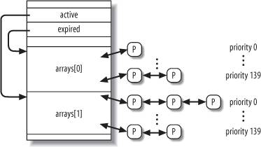

{% include JB/setup %}
{% raw %}
<div>


<a name="understandlk-CHP-7-SECT-3"></a>
<h3 class="docSection1Title" id="534869-915">7.3. Data Structures Used by the Scheduler</h3><a name="IDX-CHP-7-1867"></a>
<a name="IDX-CHP-7-1868"></a>
<a name="IDX-CHP-7-1869"></a>
<a name="IDX-CHP-7-1870"></a>
<a name="IDX-CHP-7-1871"></a>
<a name="IDX-CHP-7-1872"></a>
<p class="docText1">Recall from the section "<a class="pcalibre5 docLink pcalibre1" href="understandlk-CHP-3-SECT-2.html#understandlk-CHP-3-SECT-2.2">Identifying a Process</a>" in <a class="pcalibre5 docLink pcalibre1" href="understandlk-CHP-3.html#understandlk-CHP-3">Chapter 3</a> that the process list links all process descriptors, while the runqueue lists link the process descriptors of all runnable processesthat is, of those in a <tt class="calibre25">TASK_RUNNING</tt> stateexcept the <span class="docEmphasis">swapper</span> process (idle process).</p>
<a name="understandlk-CHP-7-SECT-3.1"></a>
<h4 class="docSection2Title">7.3.1. The runqueue Data Structure</h4>
<p class="docText1">The <tt class="calibre25">runqueue</tt> data structure is the most important data structure of the Linux 2.6 scheduler. Each CPU in the system has its own runqueue; all <tt class="calibre25">runqueue</tt> structures are stored in the <tt class="calibre25">runqueues</tt> per-CPU variable (see the section "<a class="pcalibre5 docLink pcalibre1" href="understandlk-CHP-5-SECT-2.html#understandlk-CHP-5-SECT-2.1">Per-CPU Variables</a>" in <a class="pcalibre5 docLink pcalibre1" href="understandlk-CHP-5.html#understandlk-CHP-5">Chapter 5</a>). The <tt class="calibre25">this_rq( )</tt> macro yields the address of the runqueue of the local CPU, while the <tt class="calibre25">cpu_rq(n)</tt> macro yields the address of the runqueue of the CPU having index <tt class="calibre25">n</tt>.</p>
<p class="docText1"><a class="pcalibre5 docLink pcalibre1" href="#understandlk-CHP-7-TABLE-4">Table 7-4</a> lists the fields included in the <tt class="calibre25">runqueue</tt> data structure; we will discuss most of them in the following sections of the chapter.</p>
<a name="understandlk-CHP-7-TABLE-4"></a><p class="calibre14"><table cellspacing="0" frame="hsides" rules="all" cellpadding="4" width="100%" class="calibre15"><caption class="calibre33"><h5 class="docFigureTitle">Table 7-4. The fields of the runqueue structure</h5></caption><colgroup class="calibre16"><col class="calibre17"/><col class="calibre17"/><col class="calibre17"/></colgroup><thead class="calibre18"><tr class="calibre34"><th class="thead" scope="col"><p class="docText1"><span class="calibre5">Type</span></p></th><th class="thead" scope="col"><p class="docText1"><span class="calibre5">Name</span></p></th><th class="thead" scope="col"><p class="docText1"><span class="calibre5">Description</span></p></th></tr></thead><tr class="calibre2"><td class="docTableCell"><p class="docText2">spinlock_t</p></td><td class="docTableCell"><p class="docText2"><tt class="calibre25">lock</tt></p></td><td class="docTableCell"><p class="docText2">Spin lock protecting the lists of processes</p></td></tr><tr class="calibre2"><td class="docTableCell"><p class="docText2">unsigned long</p></td><td class="docTableCell"><p class="docText2"><tt class="calibre25">nr_running</tt></p></td><td class="docTableCell"><p class="docText2">Number of runnable processes in the runqueue lists</p></td></tr><tr class="calibre2"><td class="docTableCell"><p class="docText2">unsigned long</p></td><td class="docTableCell"><p class="docText2">cpu_load</p></td><td class="docTableCell"><p class="docText2">CPU load factor based on the average number of processes in the runqueue</p></td></tr><tr class="calibre2"><td class="docTableCell"><p class="docText2">unsigned long</p></td><td class="docTableCell"><p class="docText2"><tt class="calibre25">nr_switches</tt></p></td><td class="docTableCell"><p class="docText2">Number of process switches performed by the CPU</p></td></tr><tr class="calibre2"><td class="docTableCell"><p class="docText2">unsigned long</p></td><td class="docTableCell"><p class="docText2"><tt class="calibre25">nr_uninterruptible</tt></p></td><td class="docTableCell"><p class="docText2">Number of processes that were previously in the runqueue lists and are now sleeping in <tt class="calibre25">TASK_UNINTERRUPTIBLE</tt> state (only the sum of these fields across all runqueues is meaningful)</p></td></tr><tr class="calibre2"><td class="docTableCell"><p class="docText2">unsigned long</p></td><td class="docTableCell"><p class="docText2"><tt class="calibre25">expired_timestamp</tt></p></td><td class="docTableCell"><p class="docText2">Insertion time of the eldest process in the expired lists</p></td></tr><tr class="calibre2"><td class="docTableCell"><p class="docText2">unsigned long long</p></td><td class="docTableCell"><p class="docText2">timestamp_last_tick</p></td><td class="docTableCell"><p class="docText2">Timestamp value of the last timer interrupt</p></td></tr><tr class="calibre2"><td class="docTableCell"><p class="docText2">task_t *</p></td><td class="docTableCell"><p class="docText2"><tt class="calibre25">curr</tt></p></td><td class="docTableCell"><p class="docText2">Process descriptor pointer of the currently running process (same as <tt class="calibre25">current</tt> for the local CPU)</p></td></tr><tr class="calibre2"><td class="docTableCell"><p class="docText2">task_t *</p></td><td class="docTableCell"><p class="docText2"><tt class="calibre25">idle</tt></p></td><td class="docTableCell"><p class="docText2">Process descriptor pointer of the <span class="docEmphasis">swapper</span> process for this CPU</p></td></tr><tr class="calibre2"><td class="docTableCell"><p class="docText2">struct mm_struct *</p></td><td class="docTableCell"><p class="docText2"><tt class="calibre25">prev_mm</tt></p></td><td class="docTableCell"><p class="docText2">Used during a process switch to store the address of the memory descriptor of the process being replaced</p></td></tr><tr class="calibre2"><td class="docTableCell"><p class="docText2">prio_array_t *</p></td><td class="docTableCell"><p class="docText2"><tt class="calibre25">active</tt></p></td><td class="docTableCell"><p class="docText2">Pointer to the lists of active processes</p></td></tr><tr class="calibre2"><td class="docTableCell"><p class="docText2">prio_array_t *</p></td><td class="docTableCell"><p class="docText2"><tt class="calibre25">expired</tt></p></td><td class="docTableCell"><p class="docText2">Pointer to the lists of expired processes</p></td></tr><tr class="calibre2"><td class="docTableCell"><p class="docText2">prio_array_t [2]</p></td><td class="docTableCell"><p class="docText2"><tt class="calibre25">arrays</tt></p></td><td class="docTableCell"><p class="docText2">The two sets of active and expired processes</p></td></tr><tr class="calibre2"><td class="docTableCell"><p class="docText2">int</p></td><td class="docTableCell"><p class="docText2">best_expired_prio</p></td><td class="docTableCell"><p class="docText2">The best static priority (lowest value) among the expired processes</p></td></tr><tr class="calibre2"><td class="docTableCell"><p class="docText2">atomic_t</p></td><td class="docTableCell"><p class="docText2"><tt class="calibre25">nr_iowait</tt></p></td><td class="docTableCell"><p class="docText2">Number of processes that were previously in the runqueue lists and are now waiting for a disk I/O operation to complete</p></td></tr><tr class="calibre2"><td class="docTableCell"><p class="docText2">struct sched_domain *</p></td><td class="docTableCell"><p class="docText2">sd</p></td><td class="docTableCell"><p class="docText2">Points to the base scheduling domain of this CPU (see the section "<a class="pcalibre5 docLink pcalibre1" href="understandlk-CHP-7-SECT-5.html#understandlk-CHP-7-SECT-5.1">Scheduling Domains</a>" later in this chapter)</p></td></tr><tr class="calibre2"><td class="docTableCell"><p class="docText2">int</p></td><td class="docTableCell"><p class="docText2"><tt class="calibre25">active_balance</tt></p></td><td class="docTableCell"><p class="docText2">Flag set if some process shall be <span class="docEmphasis">migrated</span> from this runqueue to another (runqueue balancing)</p></td></tr><tr class="calibre2"><td class="docTableCell"><p class="docText2">int</p></td><td class="docTableCell"><p class="docText2"><tt class="calibre25">push_cpu</tt></p></td><td class="docTableCell"><p class="docText2">Not used</p></td></tr><tr class="calibre2"><td class="docTableCell"><p class="docText2">task_t *</p></td><td class="docTableCell"><p class="docText2"><tt class="calibre25">migration_thread</tt></p></td><td class="docTableCell"><p class="docText2">Process descriptor pointer of the <span class="docEmphasis">migration</span><a name="IDX-CHP-7-1873"></a> 
 kernel thread</p></td></tr><tr class="calibre2"><td class="docTableCell"><p class="docText2">struct list_head</p></td><td class="docTableCell"><p class="docText2"><tt class="calibre25">migration_queue</tt></p></td><td class="docTableCell"><p class="docText2">List of processes to be removed from the runqueue</p></td></tr></table></p><br class="calibre7"/>
<p class="docText1">The most important fields of the <tt class="calibre25">runqueue</tt> data structure are those related to the lists of runnable processes. Every runnable process in the system belongs to one, and just one, runqueue. As long as a runnable process remains in the same runqueue, it can be executed only by the CPU owning that runqueue. However, as we'll see later, runnable processes may migrate from one runqueue to another.</p>
<p class="docText1">The <tt class="calibre25">arrays</tt> field of the runqueue is an array consisting of two <tt class="calibre25">prio_array_t</tt> structures. Each data structure represents a set of runnable processes, and includes 140 doubly linked list heads (one list for each possible process priority), a priority bitmap, and a counter of the processes included in the set (see <a class="pcalibre5 docLink pcalibre1" href="understandlk-CHP-3-SECT-2.html#understandlk-CHP-3-TABLE-2">Table 3-2</a> in the section <a class="pcalibre5 docLink pcalibre1" href="understandlk-CHP-3.html#understandlk-CHP-3">Chapter 3</a>).</p>
<a name="understandlk-CHP-7-FIG-1"></a><p class="calibre14"><center class="calibre8">
<h5 class="docFigureTitle">Figure 7-1. The runqueue structure and the two sets of runnable processes</h5>
</center></p><br class="calibre7"/>
<p class="docText1">As shown in <a class="pcalibre5 docLink pcalibre1" href="#understandlk-CHP-7-FIG-1">Figure 7-1</a>, the <tt class="calibre25">active</tt> field of the <tt class="calibre25">runqueue</tt> structure points to one of the two <tt class="calibre25">prio_array_t</tt> data structures in <tt class="calibre25">arrays</tt>: the corresponding set of runnable processes includes the active processes. Conversely, the <tt class="calibre25">expired</tt> field points to the other <tt class="calibre25">prio_array_t</tt> data structure in <tt class="calibre25">arrays</tt>: the corresponding set of runnable processes includes the expired processes.</p>
<p class="docText1">Periodically, the role of the two data structures in <tt class="calibre25">arrays</tt> changes: the active processes suddenly become the expired processes, and the expired processes become the active ones. To achieve this change, the scheduler simply exchanges the contents of the <tt class="calibre25">active</tt> and <tt class="calibre25">expired</tt> fields of the runqueue.</p>
<a name="understandlk-CHP-7-SECT-3.2"></a>
<h4 class="docSection2Title">7.3.2. Process Descriptor</h4>
<p class="docText1">Each process descriptor includes several fields related to scheduling; they are listed in <a class="pcalibre5 docLink pcalibre1" href="#understandlk-CHP-7-TABLE-5">Table 7-5</a>.</p>
<a name="understandlk-CHP-7-TABLE-5"></a><p class="calibre14"><table cellspacing="0" frame="hsides" rules="all" cellpadding="4" width="100%" class="calibre15"><caption class="calibre33"><h5 class="docFigureTitle">Table 7-5. Fields of the process descriptor related to the scheduler</h5></caption><colgroup class="calibre16"><col class="calibre17"/><col class="calibre17"/><col class="calibre17"/></colgroup><thead class="calibre18"><tr class="calibre34"><th class="thead" scope="col"><p class="docText1"><span class="calibre5">Type</span></p></th><th class="thead" scope="col"><p class="docText1"><span class="calibre5">Name</span></p></th><th class="thead" scope="col"><p class="docText1"><span class="calibre5">Description</span></p></th></tr></thead><tr class="calibre2"><td class="docTableCell"><p class="docText2">unsigned long</p></td><td class="docTableCell"><p class="docText2">thread_info-&gt;flags</p></td><td class="docTableCell"><p class="docText2">Stores the <tt class="calibre25">TIF_NEED_RESCHED</tt> flag, which is set if the scheduler must be invoked (see the section "<a class="pcalibre5 docLink pcalibre1" href="understandlk-CHP-4-SECT-9.html#understandlk-CHP-4-SECT-9">Returning from Interrupts and Exceptions</a>" in <a class="pcalibre5 docLink pcalibre1" href="understandlk-CHP-4.html#understandlk-CHP-4">Chapter 4</a>)</p></td></tr><tr class="calibre2"><td class="docTableCell"><p class="docText2">unsigned int</p></td><td class="docTableCell"><p class="docText2">thread_info-&gt;cpu</p></td><td class="docTableCell"><p class="docText2">Logical number of the CPU owning the runqueue to which the runnable process belongs</p></td></tr><tr class="calibre2"><td class="docTableCell"><p class="docText2">unsigned long</p></td><td class="docTableCell"><p class="docText2">state</p></td><td class="docTableCell"><p class="docText2">The current state of the process (see the section "<a class="pcalibre5 docLink pcalibre1" href="understandlk-CHP-3-SECT-2.html#understandlk-CHP-3-SECT-2.1">Process State</a>" in <a class="pcalibre5 docLink pcalibre1" href="understandlk-CHP-3.html#understandlk-CHP-3">Chapter 3</a>)</p></td></tr><tr class="calibre2"><td class="docTableCell"><p class="docText2"><tt class="calibre25">int</tt></p></td><td class="docTableCell"><p class="docText2"><tt class="calibre25">prio</tt></p></td><td class="docTableCell"><p class="docText2">Dynamic priority of the process</p></td></tr><tr class="calibre2"><td class="docTableCell"><p class="docText2"><tt class="calibre25">int</tt></p></td><td class="docTableCell"><p class="docText2"><tt class="calibre25">static_prio</tt></p></td><td class="docTableCell"><p class="docText2">Static priority of the process</p></td></tr><tr class="calibre2"><td class="docTableCell"><p class="docText2"><tt class="calibre25">struct list_head</tt></p></td><td class="docTableCell"><p class="docText2"><tt class="calibre25">run_list</tt></p></td><td class="docTableCell"><p class="docText2">Pointers to the next and previous elements in the runqueue list to which the process belongs</p></td></tr><tr class="calibre2"><td class="docTableCell"><p class="docText2"><tt class="calibre25">prio_array_t *</tt></p></td><td class="docTableCell"><p class="docText2"><tt class="calibre25">array</tt></p></td><td class="docTableCell"><p class="docText2">Pointer to the runqueue's <tt class="calibre25">prio_array_t</tt> set that includes the process</p></td></tr><tr class="calibre2"><td class="docTableCell"><p class="docText2"><tt class="calibre25">unsigned long</tt></p></td><td class="docTableCell"><p class="docText2"><tt class="calibre25">sleep_avg</tt></p></td><td class="docTableCell"><p class="docText2">Average sleep time of the process</p></td></tr><tr class="calibre2"><td class="docTableCell"><p class="docText2"><tt class="calibre25">unsigned long long</tt></p></td><td class="docTableCell"><p class="docText2"><tt class="calibre25">timestamp</tt></p></td><td class="docTableCell"><p class="docText2">Time of last insertion of the process in the runqueue, or time of last process switch involving the process</p></td></tr><tr class="calibre2"><td class="docTableCell"><p class="docText2"><tt class="calibre25">unsigned long long</tt></p></td><td class="docTableCell"><p class="docText2"><tt class="calibre25">last_ran</tt></p></td><td class="docTableCell"><p class="docText2">Time of last process switch that replaced the process</p></td></tr><tr class="calibre2"><td class="docTableCell"><p class="docText2"><tt class="calibre25">int</tt></p></td><td class="docTableCell"><p class="docText2"><tt class="calibre25">activated</tt></p></td><td class="docTableCell"><p class="docText2">Condition code used when the process is awakened</p></td></tr><tr class="calibre2"><td class="docTableCell"><p class="docText2"><tt class="calibre25">unsigned long</tt></p></td><td class="docTableCell"><p class="docText2"><tt class="calibre25">policy</tt></p></td><td class="docTableCell"><p class="docText2">The scheduling class of the process (<tt class="calibre25">SCHED_NORMAL</tt>, <tt class="calibre25">SCHED_RR</tt>, or <tt class="calibre25">SCHED_FIFO</tt>)</p></td></tr><tr class="calibre2"><td class="docTableCell"><p class="docText2"><tt class="calibre25">cpumask_t</tt></p></td><td class="docTableCell"><p class="docText2"><tt class="calibre25">cpus_allowed</tt></p></td><td class="docTableCell"><p class="docText2">Bit mask of the CPUs that can execute the process</p></td></tr><tr class="calibre2"><td class="docTableCell"><p class="docText2"><tt class="calibre25">unsigned int</tt></p></td><td class="docTableCell"><p class="docText2"><tt class="calibre25">time_slice</tt></p></td><td class="docTableCell"><p class="docText2">Ticks left in the time quantum of the process</p></td></tr><tr class="calibre2"><td class="docTableCell"><p class="docText2"><tt class="calibre25">unsigned int</tt></p></td><td class="docTableCell"><p class="docText2"><tt class="calibre25">first_time_slice</tt></p></td><td class="docTableCell"><p class="docText2">Flag set to 1 if the process never exhausted its time quantum</p></td></tr><tr class="calibre2"><td class="docTableCell"><p class="docText2"><tt class="calibre25">unsigned long</tt></p></td><td class="docTableCell"><p class="docText2"><tt class="calibre25">rt_priority</tt></p></td><td class="docTableCell"><p class="docText2">Real-time priority of the process</p></td></tr></table></p><br class="calibre7"/>
<p class="docText1">When a new process is created, <tt class="calibre25">sched_fork( )</tt>, invoked by <tt class="calibre25">copy_process( )</tt>, sets the <tt class="calibre25">time_slice</tt> field of both <tt class="calibre25">current</tt> (the parent) and <tt class="calibre25">p</tt> (the child) processes in the following way:</p>
<pre class="calibre27">
p-&gt;time_slice = (current-&gt;time_slice + 1) &gt;&gt; 1;
current-&gt;time_slice &gt;&gt;= 1;</pre><br class="calibre7"/>
<p class="docText1">In other words, the number of ticks left to the parent is split in two halves: one for the parent and one for the child. This is done to prevent users from getting an unlimited amount of CPU time by using the following method: the parent process creates a child process that runs the same code and then kills itself; by properly adjusting the creation rate, the child process would always get a fresh quantum before the quantum of its parent expires. This programming trick does not work because the kernel does not reward forks. Similarly, a user cannot hog an unfair share of the processor by starting several background processes in a shell or by opening a lot of windows on a graphical desktop. More generally speaking, a process cannot hog resources (unless it has privileges to give itself a real-time policy) by forking multiple descendents.</p>
<p class="docText1">If the parent had just one tick left in its time slice, the splitting operation forces <tt class="calibre25">current-&gt;time_slice</tt> to 0, thus exhausting the quantum of the parent. In this case, <tt class="calibre25">copy_process( )</tt> sets <tt class="calibre25">current-&gt;time_slice</tt> back to 1, then invokes <tt class="calibre25">scheduler_tick( )</tt> to decrease the field (see the following section).</p>
<p class="docText1">The <tt class="calibre25">copy_process( )</tt> function also initializes a few other fields of the child's process descriptor related to scheduling:</p>
<pre class="calibre27">
p-&gt;first_time_slice = 1;
p-&gt;timestamp = sched_clock( );</pre><br class="calibre7"/>
<p class="docText1">The <tt class="calibre25">first_time_slice</tt> flag is set to 1, because the child has never exhausted its time quantum (if a process terminates or executes a new program during its first time slice, the parent process is rewarded with the remaining time slice of the child). The <tt class="calibre25">timestamp</tt> field is initialized with a timestamp value produced by <tt class="calibre25">sched_clock( )</tt>: essentially, this function returns the contents of the 64-bit TSC register (see the section "<a class="pcalibre5 docLink pcalibre1" href="understandlk-CHP-6-SECT-1.html#understandlk-CHP-6-SECT-1.2">Time Stamp Counter (TSC)</a>" in <a class="pcalibre5 docLink pcalibre1" href="understandlk-CHP-6.html#understandlk-CHP-6">Chapter 6</a>) converted to nanoseconds.</p>

<br class="calibre7"/>

</div>

{% endraw %}

